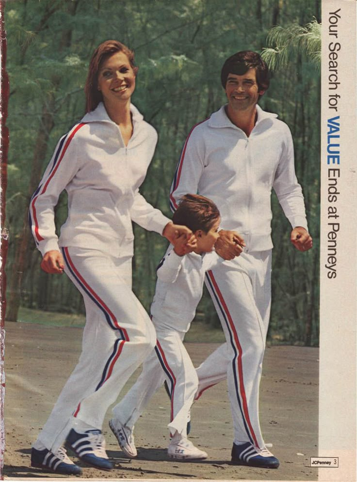
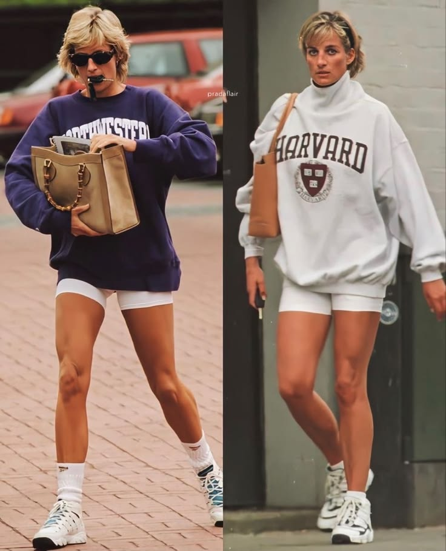
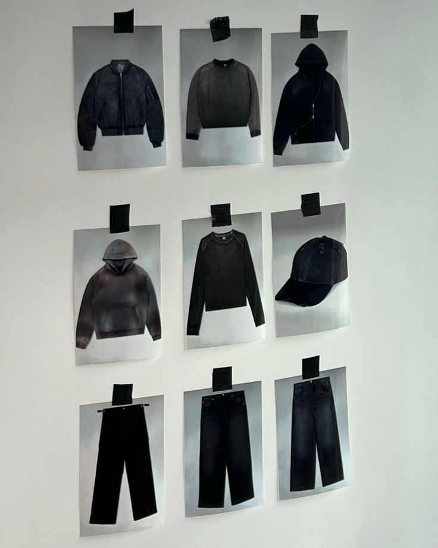

Как спорт покорил моду

В 1980-х спортивный костюм вышел за пределы стадиона. Трикотажные комплекты с контрастными полосами по боку и крупными логотипами на груди носили не только на тренировках: в них ходили в город, в клубы, на встречи с друзьями. Одежда, придуманная для движения, впервые начала говорить о человеке больше, чем строгий костюм.
Толчок дали сразу две вещи. Первая — массовые аэробика и джоггинг: миллионы людей впервые стали покупать спортивную одежду не для соревнований, а для себя. Вторая — музыкальные клипы и телевизионные трансляции, где спортсмены и артисты появлялись в одном и том же. Футболка, худи и кроссовки перестали быть инвентарём и стали частью образа.
В 1990-х эстафету подхватила улица. Скейтеры, рэперы и фанаты футбольных клубов смешивали спортивное с повседневным — так родился тот самый силуэт «свободный верх, свободный низ, кроссовки», который мы носим до сих пор. Одежда становилась удобнее, но при этом всё заметнее: логотип на груди превратился в знак принадлежности к культуре.

К началу двухтысячных спортивная эстетика перестала быть чем-то отдельным. Дизайнеры брали у неё не функции, а язык: эластичные ткани, спортивный кант, капюшон, резинку на поясе. Вещи, придуманные ради свободы движения, начали появляться в коллекциях домов, которые к спорту отношения не имеют.
Сегодня спорт-шик - один из главных трендов именно потому, что он честный. Он не требует менять походку, не заставляет мёрзнуть и не спорит с телом. Крой и материалы спортивной одежды спокойно уживаются с продуманным силуэтом, и в этом главный фокус «ФОРМЫ»: удобство движения плюс точная посадка.
Наш взгляд на историю простой. Спорт-шик победил не потому, что стал модным, а потому что оказался удобнее. Всё остальное — полосы, логотипы, цвета — уже следствие.
О нас

ФОРМА — магазин, который собирает лучшие вещи в стиле спорт-шик от разных брендов в одном пространстве. Мы не привязаны к одной марке и не обязаны продавать всю линейку: у нас оказались только те вещи, которые мы сами готовы носить.
Мы не производим одежду. Это важно понимать сразу: «ФОРМА» — не фабрика и не ателье, а куратор. Мы смотрим коллекции, отбираем то, что действительно держит форму, проверяем посадку на разных людях и оставляем в каталоге только пройденное. Всё, что не прошло отбор, в магазин не попадает — даже если это известный логотип.
Такой подход даёт простую вещь: каждый товар на сайте мы можем объяснить. Почему именно этот крой, почему такая плотность ткани, с чем это носить и чего ждать после десятой стирки. Мы не прячем информацию в общие слова — на странице каждой вещи есть состав, посадка и уход.
Вторая часть работы — сочетания. Отдельная футболка сама по себе ничего не решает, поэтому мы показываем готовые образы и подписываем, из каких вещей они собраны. Так проще собрать комплект, не изучая тренды и не перебирая десятки страниц.
Наши принципы
- Мы курируем, а не производим. Отбираем вещи у разных брендов и отвечаем за выбор.
- Посадка важнее логотипа. Если вещь плохо сидит, известное имя её не спасёт.
- Понятные характеристики. Состав, плотность, крой и уход — без общих фраз.
- Спокойный стиль. Спорт-шик работает, когда его не слишком много.
Образы
Готовые комплекты из вещей нашего каталога.